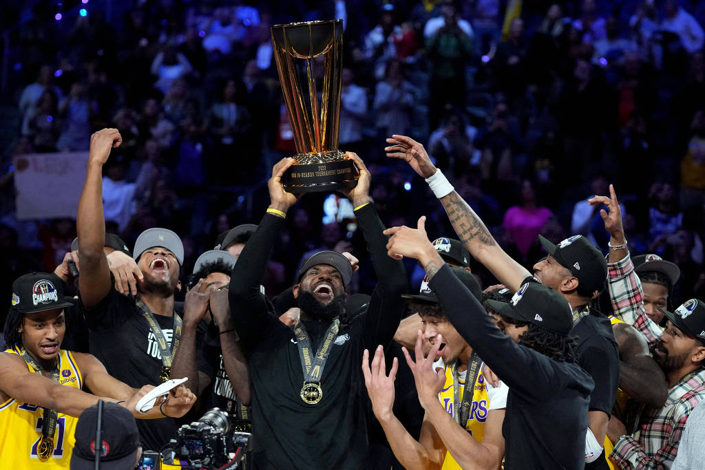

Lakers Campeões do Torneio In-Season
Na noite de sábado (09/12/2023) ocorreu a final do primeiro In-Season Tournament, esse torneio acontece dentro da temporada regular da NBA.
Com o placar de 123 a 109 o Los Langeles Lakers se tornou o primeiro vencedor do torneio que foi surpreendente sucesso.
Ler mais

Lebron James bate recorde de pontos da NBA
Considerado um dos melhores jogadores de basquete de todos os tempos, LeBron James se tornou o maior pontuador da NBA de todos os tempos na madrugada desta quarta-feira, 8, durante a derrota do Los Angeles Lakers para o Oklahoma City Thunders por 133 a 130. Com mais uma atuação de gala, o astro superou o recorde histórico de Kareem Abdul-Jabbar, de 38.387 pontos na principal liga do mundo. Então aquele momento foi um deles quando eu meio que chorei um pouco. Foi tipo: ‘Eu não posso acreditar no que está acontecendo'”, disse o jogador de 38 anos, que agora soma 38.390 pontos.
Ler mais

Damian Lillard é negociado com o Milwaukee Bucks
A estrela do Portland Trail-Blazers, Damian Lillard foi trocado para o Milwaukee Bucks. A informação é do repórter norte-americano especialista em NBA Adrian Wojnarowski. Lillard já havia manifestado interesse em deixar a franquia de Oregon. A troca envolve três equipes: Bucks, Blazers e o Phoenix Suns.
Ler mais